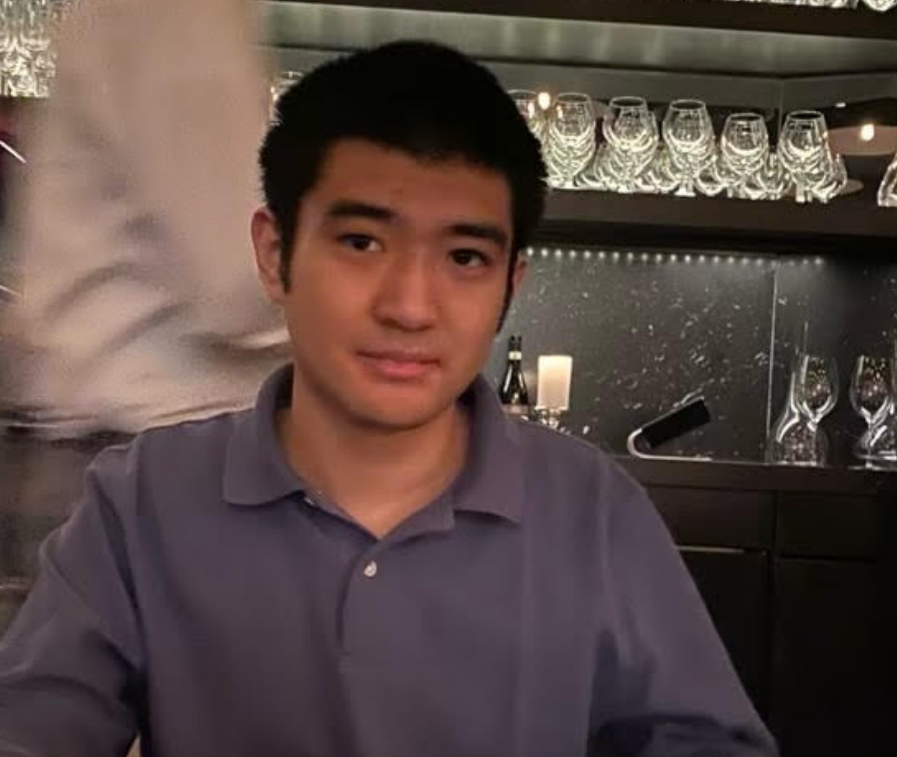

Randy Chow
JOURNALISM STUDENT

Experience
Intern
Greenbelt News Review
2024
I copy edit, proofread, fact check and write articles.
Editor/reporter
Stories Beneath the Shell
2022-present
I edit and write about UMD's underreported stories.
Education
Bachelor’s degree, journalism, University of Maryland, 2025
Associate’s degree, general studies, Montgomery College, 2022
Skills
Basic Spanish
Audio recording/editing: WeVideo and Audacity
AP Style